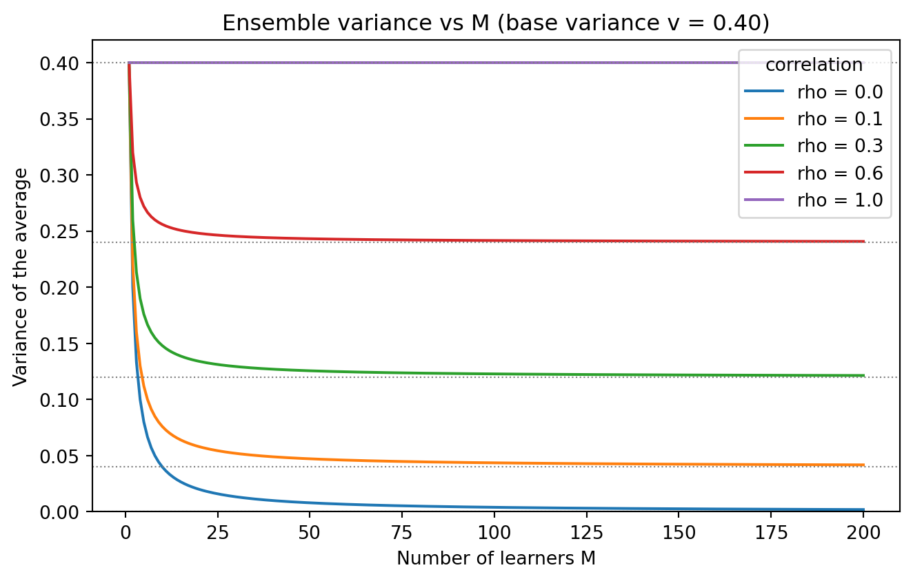
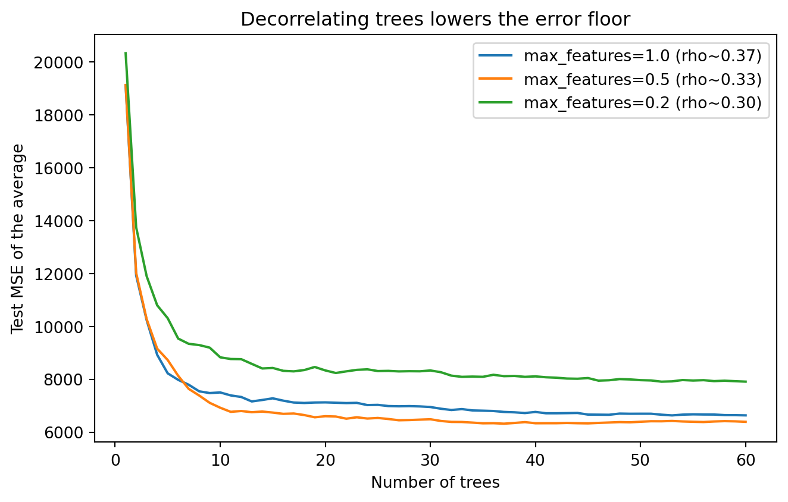

flowchart TD
A[Single model error] --> B[Bias squared plus variance plus noise]
B --> C[Average many models]
C --> D[Variance of the average]
D --> E["Var = v/M + (1 - 1/M) rho v"]
E --> F{Correlation rho}
F -->|low| G[Large variance reduction]
F -->|high| H[Correlation floor limits gain]
G --> I[Bagging and Random Forests]
H --> J[Need to manufacture diversity]
B --> K[Reduce bias by sequencing]
K --> L[Boosting]
I --> M[Stacking learns the blend]
L --> M
105 Ensemble Methods Principles
Ensemble learning combines the predictions of several base models into a single, stronger predictor. The intuition is old and intuitive: a committee of reasonable forecasters, each fallible in its own way, tends to outperform any single member. This chapter develops that intuition into precise theory. We examine why ensembles work through the lenses of bias, variance, and diversity, formalize the wisdom of crowds, derive the bias-variance-covariance decomposition that governs regression ensembles, and survey the three principal families of methods: bagging, boosting, and stacking.
105.1 1. Why Ensembles Work
105.1.1 1.1 The Core Intuition
A single model maps inputs to predictions while making errors. Some errors come from systematic limitations of the model class, and some come from sensitivity to the particular training sample. If we train several models and average them, the systematic part of the error persists, but the sample-specific part can partially cancel. The art of ensemble design is to arrange for that cancellation to be as large as possible while keeping the systematic error small.
Three conditions make an ensemble worthwhile. First, the base models must be reasonably accurate, meaning each does better than random guessing. Second, the models must be diverse, meaning they make errors on different inputs or in different directions. Third, the aggregation rule must exploit that diversity, typically by averaging for regression or by voting for classification. When all three hold, the ensemble strictly improves on its members.
105.1.2 1.2 A First Decomposition
Consider a regression target \(y\) and a learned predictor \(f(x)\) trained on a random dataset \(D\). The expected squared error at a fixed point \(x\), taken over draws of \(D\) and the noise in \(y\), decomposes as
\[ \mathbb{E}\big[(y - f(x))^2\big] = \underbrace{\big(\bar{f}(x) - \mathbb{E}[y \mid x]\big)^2}_{\text{bias}^2} + \underbrace{\mathbb{E}\big[(f(x) - \bar{f}(x))^2\big]}_{\text{variance}} + \underbrace{\sigma^2}_{\text{noise}}, \]
where \(\bar{f}(x) = \mathbb{E}_D[f(x)]\) is the average prediction across training sets and \(\sigma^2\) is the irreducible noise variance. Bias measures how far the average model sits from the truth. Variance measures how much the model wobbles as the training set changes. Noise is beyond any learner’s reach.
This decomposition organizes ensemble strategy. Methods that average many high-variance models, such as bagging, primarily attack the variance term. Methods that build a sequence of models each correcting the residual errors of its predecessors, such as boosting, primarily attack the bias term. Understanding which term dominates a given problem tells you which family to reach for.
105.1.3 1.3 Architecture of the Argument
The diagram below traces the logical path of this chapter, from the single model decomposition through the wisdom of crowds to the three method families.
105.2 2. The Wisdom of Crowds
105.2.1 2.1 Condorcet’s Jury Theorem
The earliest formal statement of ensemble benefit is the Condorcet jury theorem from 1785. Suppose \(M\) independent voters each decide a binary question correctly with probability \(p > 1/2\). A majority vote is correct with probability that increases monotonically in \(M\) and approaches \(1\) as \(M \to \infty\). The probability that the majority is correct is
\[ P_{\text{maj}} = \sum_{k = \lceil M/2 \rceil}^{M} \binom{M}{k} p^k (1-p)^{M-k}. \]
For \(p = 0.6\) and \(M = 11\), the majority is correct about \(75\%\) of the time, already a large gain over any single voter. The theorem has a sharp edge: if \(p < 1/2\), adding voters drives the majority toward certain error. Weak learners must be better than chance for voting to help, and systematically biased voters make the crowd worse.
105.2.2 2.2 The Independence Assumption
Condorcet assumes the voters err independently. Real base models trained on overlapping data and shared features are correlated, and correlation is the central obstacle to ensemble gains. If every model made the same mistakes, averaging would buy nothing. The practical program of ensemble learning is therefore to manufacture diversity: to train models that are individually competent yet make uncorrelated errors. The next section makes the cost of correlation quantitative.
105.3 3. The Bias-Variance-Covariance Decomposition
105.3.1 3.1 Averaging Estimators
Let an ensemble predict by simple averaging,
\[ \bar{f}(x) = \frac{1}{M} \sum_{i=1}^{M} f_i(x), \]
where each \(f_i\) is a base model. Suppose for clarity that the members share a common bias and variance, so \(\mathbb{E}[f_i] = \mu\) and \(\mathrm{Var}(f_i) = v\) for all \(i\), and that every distinct pair has covariance \(\mathrm{Cov}(f_i, f_j) = c\). Define the average pairwise correlation \(\rho = c / v\).
The variance of the ensemble prediction follows from expanding the variance of a sum. Writing the average as \(\bar{f} = \frac{1}{M}\sum_i f_i\) and using bilinearity of covariance,
\[ \mathrm{Var}(\bar{f}) = \frac{1}{M^2}\,\mathrm{Var}\!\left(\sum_{i=1}^{M} f_i\right) = \frac{1}{M^2}\left( \sum_{i=1}^{M}\mathrm{Var}(f_i) + \sum_{i \ne j}\mathrm{Cov}(f_i, f_j) \right). \]
There are \(M\) diagonal variance terms, each equal to \(v\), and \(M(M-1)\) off-diagonal covariance terms, each equal to \(c\). Substituting,
\[ \mathrm{Var}(\bar{f}) = \frac{1}{M^2}\big( M v + M(M-1) c \big) = \frac{v}{M} + \frac{M-1}{M}\,c. \]
Finally, replacing \(c = \rho v\) gives the form that carries the whole message:
\[ \mathrm{Var}(\bar{f}) = \frac{v}{M} + \left(1 - \frac{1}{M}\right) \rho v. \]
As \(M\) grows, the first term vanishes, but the second term tends to \(\rho v\), a floor set by the correlation between members. If the members are independent (\(\rho = 0\)), the ensemble variance falls as \(v/M\) and can be driven arbitrarily small. If the members are perfectly correlated (\(\rho = 1\)), the ensemble variance stays at \(v\) and averaging accomplishes nothing.
Taking the limit makes the floor explicit:
\[ \lim_{M \to \infty} \mathrm{Var}(\bar{f}) = \rho v. \]
The independent-error case recovers the classical variance reduction of the sample mean, \(\mathrm{Var}(\bar{f}) = v/M\). The general case interpolates between that ideal and total stagnation according to a single dial, \(\rho\).
105.3.1.1 Worked Example
Suppose each base learner has variance \(v = 0.40\) and we average \(M = 25\) of them. With independent errors (\(\rho = 0\)) the ensemble variance is \(0.40 / 25 = 0.016\), a twenty-five-fold reduction. With a realistic correlation of \(\rho = 0.30\), however,
\[ \mathrm{Var}(\bar{f}) = \frac{0.40}{25} + \left(1 - \frac{1}{25}\right)(0.30)(0.40) = 0.016 + 0.1152 = 0.1312. \]
The correlation term dwarfs the averaging term: the ensemble variance is roughly \(0.131\) rather than the idealized \(0.016\), only a threefold reduction from the single-learner value of \(0.40\). Pushing \(M\) to infinity would bottom out at \(\rho v = 0.12\). This is why random forests work so hard to decorrelate trees: shaving \(\rho\) from \(0.30\) to \(0.10\) lowers the floor from \(0.12\) to \(0.04\), a far larger gain than any further increase in \(M\) can deliver.
105.3.2 3.2 The Full Decomposition
For an ensemble of possibly heterogeneous members, the expected squared error decomposes into three interpretable pieces:
\[ \mathbb{E}\big[(\bar{f} - y)^2\big] = \overline{\text{bias}}^{\,2} + \frac{1}{M}\,\overline{\text{var}} + \left(1 - \frac{1}{M}\right)\overline{\text{covar}}, \]
where \(\overline{\text{bias}}\) is the average bias of the members, \(\overline{\text{var}}\) is their average variance, and \(\overline{\text{covar}}\) is the average covariance between distinct members. This is the bias-variance-covariance decomposition due to Ueda and Nakano.
The decomposition exposes the fundamental tension. Lowering the covariance term, by making members more diverse, usually requires weakening individual members, which raises the bias term. A pool of identical strong models has low bias but high covariance. A pool of wildly diverse weak models has low covariance but high bias. Good ensemble design finds the sweet spot where the marginal reduction in covariance outweighs the marginal increase in bias.
105.3.3 3.3 Diversity Is Not Free
It is tempting to chase diversity for its own sake, but the decomposition warns against it. The relevant quantity is not raw disagreement but the joint effect on the error. Negative correlation is even better than zero correlation, since \(\overline{\text{covar}} < 0\) pushes the ensemble error below the average member variance scaled by \(1/M\). Methods such as negative correlation learning explicitly add a penalty that rewards members for erring in opposite directions, training the pool jointly rather than independently.
A useful identity is the ambiguity decomposition of Krogh and Vedelsby. For a uniformly weighted average \(\bar{f} = \frac{1}{M}\sum_i f_i\) and any target \(y\), a short algebraic manipulation gives
\[ \big(\bar{f} - y\big)^2 = \frac{1}{M}\sum_{i=1}^{M}\big(f_i - y\big)^2 - \frac{1}{M}\sum_{i=1}^{M}\big(f_i - \bar{f}\big)^2 . \]
The first term on the right is the average member error; the second is the ensemble ambiguity, a nonnegative measure of how much the members disagree with their own average. Because ambiguity is subtracted, the ensemble error can never exceed the average member error, and it improves precisely to the extent that members disagree while remaining individually accurate. This identity holds pointwise for every \(y\), with no assumptions on the members, which makes it the cleanest justification for chasing diversity among competent learners.
105.4 4. Computational Laboratory
The theory above lives or dies by one equation, the variance of a correlated average. This section verifies that equation symbolically, simulates it across correlation regimes, and confirms on real data that decorrelating learners is what drives ensemble gains. The code is fully runnable.
105.4.1 4.1 Symbolic Check and Simulation
Code
import numpy as np
import pandas as pd
import sympy as sp
import matplotlib.pyplot as plt
RNG = np.random.default_rng(20260620)
# ---- 1. Symbolic verification of Var(average) ----
M, v, rho = sp.symbols("M v rho", positive=True)
# Build the variance of an average of M members each with variance v and
# pairwise covariance rho*v, directly from the sum-of-variances expansion.
diag = M * v # M variance terms
offdiag = M * (M - 1) * rho * v # M(M-1) covariance terms
var_avg = sp.simplify((diag + offdiag) / M**2)
closed_form = v / M + (1 - 1 / M) * rho * v
print("Symbolic Var(average):", var_avg)
print("Closed form :", sp.simplify(closed_form))
print("Difference is zero :", sp.simplify(var_avg - closed_form) == 0)
print("Limit as M -> oo :", sp.limit(var_avg, M, sp.oo))
# ---- 2. Monte Carlo confirmation at one operating point ----
def correlated_members(n_draws, M_, v_, rho_, rng):
"""Draw M correlated zero-mean members via a one-factor model."""
# f_i = sqrt(rho) * shared + sqrt(1 - rho) * private, scaled to variance v.
shared = rng.standard_normal((n_draws, 1))
private = rng.standard_normal((n_draws, M_))
f = np.sqrt(rho_) * shared + np.sqrt(1 - rho_) * private
return np.sqrt(v_) * f
v_val, rho_val, M_val = 0.40, 0.30, 25
members = correlated_members(200_000, M_val, v_val, rho_val, RNG)
empirical = members.mean(axis=1).var()
predicted = v_val / M_val + (1 - 1 / M_val) * rho_val * v_val
print(f"\nEmpirical Var(average): {empirical:.5f}")
print(f"Predicted Var(average): {predicted:.5f}")Symbolic Var(average): v*(rho*(M - 1) + 1)/M
Closed form : v*(rho*(M - 1) + 1)/M
Difference is zero : True
Limit as M -> oo : rho*v
Empirical Var(average): 0.13130
Predicted Var(average): 0.13120Code
# ---- 3. Results TABLE: variance reduction across correlations ----
rows = []
for rho_val in [0.0, 0.1, 0.3, 0.6, 1.0]:
for M_val in [1, 5, 25, 100, 1000]:
var = v_val / M_val + (1 - 1 / M_val) * rho_val * v_val
floor = rho_val * v_val
rows.append({
"rho": rho_val,
"M": M_val,
"Var(avg)": round(var, 4),
"reduction_x": round(v_val / var, 2),
"floor (rho*v)": round(floor, 4),
})
table = pd.DataFrame(rows)
print(table.to_string(index=False)) rho M Var(avg) reduction_x floor (rho*v)
0.0 1 0.4000 1.00 0.00
0.0 5 0.0800 5.00 0.00
0.0 25 0.0160 25.00 0.00
0.0 100 0.0040 100.00 0.00
0.0 1000 0.0004 1000.00 0.00
0.1 1 0.4000 1.00 0.04
0.1 5 0.1120 3.57 0.04
0.1 25 0.0544 7.35 0.04
0.1 100 0.0436 9.17 0.04
0.1 1000 0.0404 9.91 0.04
0.3 1 0.4000 1.00 0.12
0.3 5 0.1760 2.27 0.12
0.3 25 0.1312 3.05 0.12
0.3 100 0.1228 3.26 0.12
0.3 1000 0.1203 3.33 0.12
0.6 1 0.4000 1.00 0.24
0.6 5 0.2720 1.47 0.24
0.6 25 0.2464 1.62 0.24
0.6 100 0.2416 1.66 0.24
0.6 1000 0.2402 1.67 0.24
1.0 1 0.4000 1.00 0.40
1.0 5 0.4000 1.00 0.40
1.0 25 0.4000 1.00 0.40
1.0 100 0.4000 1.00 0.40
1.0 1000 0.4000 1.00 0.40Code
# ---- 4. FIGURE: ensemble error vs number of learners at each correlation ----
Ms = np.arange(1, 201)
fig, ax = plt.subplots(figsize=(7, 4.5))
for rho_val in [0.0, 0.1, 0.3, 0.6, 1.0]:
var = v_val / Ms + (1 - 1 / Ms) * rho_val * v_val
ax.plot(Ms, var, label=f"rho = {rho_val}")
ax.axhline(rho_val * v_val, ls=":", lw=0.8, color="grey")
ax.set_xlabel("Number of learners M")
ax.set_ylabel("Variance of the average")
ax.set_title("Ensemble variance vs M (base variance v = 0.40)")
ax.legend(title="correlation")
ax.set_ylim(0, 0.42)
fig.tight_layout()
plt.show()
Code
# ---- 5. FIGURE: real data, decorrelation drives the gain ----
from sklearn.datasets import make_regression
from sklearn.tree import DecisionTreeRegressor
from sklearn.model_selection import train_test_split
from sklearn.metrics import mean_squared_error
X, y = make_regression(n_samples=2000, n_features=20, noise=15.0,
random_state=42)
X_tr, X_te, y_tr, y_te = train_test_split(X, y, test_size=0.3,
random_state=42)
n_trees = 60
mse_by_features = {}
for max_features in [1.0, 0.5, 0.2]: # 1.0 = bagging, < 1.0 = random forest style
preds = np.zeros((len(y_te), n_trees))
for t in range(n_trees):
boot = RNG.integers(0, len(y_tr), len(y_tr))
n_feat = max(1, int(max_features * X.shape[1]))
tree = DecisionTreeRegressor(max_features=n_feat, random_state=t)
tree.fit(X_tr[boot], y_tr[boot])
preds[:, t] = tree.predict(X_te)
running = np.array([
mean_squared_error(y_te, preds[:, :k].mean(axis=1))
for k in range(1, n_trees + 1)
])
# average pairwise correlation of member errors
errs = preds - y_te[:, None]
corr = np.corrcoef(errs.T)
avg_corr = (corr.sum() - n_trees) / (n_trees * (n_trees - 1))
mse_by_features[max_features] = (running, avg_corr)
print(f"max_features={max_features:>4}: final MSE={running[-1]:8.2f} "
f"avg member-error correlation={avg_corr:.3f}")
fig, ax = plt.subplots(figsize=(7, 4.5))
for mf, (running, avg_corr) in mse_by_features.items():
ax.plot(range(1, n_trees + 1), running,
label=f"max_features={mf} (rho~{avg_corr:.2f})")
ax.set_xlabel("Number of trees")
ax.set_ylabel("Test MSE of the average")
ax.set_title("Decorrelating trees lowers the error floor")
ax.legend()
fig.tight_layout()
plt.show()max_features= 1.0: final MSE= 6633.97 avg member-error correlation=0.372
max_features= 0.5: final MSE= 6389.47 avg member-error correlation=0.329
max_features= 0.2: final MSE= 7909.50 avg member-error correlation=0.304
using Statistics, Random
Random.seed!(20260620)
# Variance of an average of M correlated members, base variance v, correlation rho
var_avg(M, v, rho) = v / M + (1 - 1 / M) * rho * v
v = 0.40
println("rho\tM\tVar(avg)\treduction")
for rho in (0.0, 0.1, 0.3, 0.6, 1.0)
for M in (1, 5, 25, 100, 1000)
var = var_avg(M, v, rho)
println("$(rho)\t$(M)\t$(round(var, digits=4))\t$(round(v / var, digits=2))")
end
end
# Monte Carlo confirmation via a one-factor model
function correlated_members(n, M, v, rho)
shared = randn(n)
private = randn(n, M)
f = sqrt(rho) .* shared .+ sqrt(1 - rho) .* private
return sqrt(v) .* f
end
members = correlated_members(200_000, 25, v, 0.30)
empirical = var(vec(mean(members, dims=2)))
predicted = var_avg(25, v, 0.30)
println("\nEmpirical: $(round(empirical, digits=5)) Predicted: $(round(predicted, digits=5))")// Variance of an average of M correlated members.
fn var_avg(m: f64, v: f64, rho: f64) -> f64 {
v / m + (1.0 - 1.0 / m) * rho * v
}
fn main() {
let v = 0.40_f64;
println!("rho\tM\tVar(avg)\treduction");
for &rho in &[0.0, 0.1, 0.3, 0.6, 1.0] {
for &m in &[1.0, 5.0, 25.0, 100.0, 1000.0] {
let var = var_avg(m, v, rho);
println!("{:.1}\t{}\t{:.4}\t{:.2}", rho, m as u32, var, v / var);
}
}
// Correlation floor: as M grows, variance approaches rho * v.
println!("\nFloor at rho=0.3: {:.4}", 0.30 * v);
}The symbolic block proves the closed form equals the raw sum-of-variances expansion and that the limit is \(\rho v\). The simulation matches the prediction to three decimals, and the table quantifies how correlation caps the reduction factor. The real-data experiment shows the bias-variance-covariance tradeoff in action: moving max_features from \(1.0\) (plain bagging) to \(0.5\) decorrelates the trees and lowers the test error, but pushing it further to \(0.2\) decorrelates them even more while raising the error, because the individual trees have grown too weak and the bias term now dominates. Decorrelation pays only up to the point where it starts crippling the members, exactly the sweet spot the decomposition predicts.
105.5 5. Bagging
105.5.1 5.1 Bootstrap Aggregating
Bagging, introduced by Breiman, reduces variance by training each member on a different bootstrap sample of the data. A bootstrap sample of size \(n\) is drawn with replacement from the \(n\) training points, so each member sees a slightly different dataset. Predictions are then averaged for regression or majority voted for classification.
for i in 1..M:
D_i = sample n points with replacement from D
f_i = train base learner on D_i
predict(x) = average or vote over { f_i(x) }Because bootstrap samples are perturbations of the same data, the members are correlated, and the correlation floor of Section 3.1 limits the gain. The benefit is largest when the base learner is unstable, meaning small changes in the training data produce large changes in the model. Deep decision trees, which can fit any partition of the input space, are the canonical unstable learner and the natural base model for bagging.
105.5.2 5.2 Random Forests and Out of Bag Estimates
Random forests sharpen bagging by injecting a second source of randomness. At each split of each tree, only a random subset of features is considered as candidates. This decorrelates the trees, lowering \(\rho\) in the variance formula and pushing the covariance floor down further than bootstrap sampling alone could. The result is one of the most reliable off the shelf predictors in machine learning.
Bagging also supplies a free validation signal. On average each bootstrap sample omits about \(37\%\) of the data, since \((1 - 1/n)^n \to e^{-1} \approx 0.368\). The omitted points are out of bag for that tree and can be used to estimate generalization error without a separate holdout set. Out of bag error closely tracks cross validation error at a fraction of the cost.
105.6 6. Boosting
105.6.1 6.1 Sequential Bias Reduction
Boosting takes the opposite approach to bagging. Rather than averaging independent high-variance models, it builds a sequence of weak high-bias models, each focused on the examples its predecessors got wrong. The final predictor is a weighted sum that has lower bias than any individual member. Where bagging parallelizes, boosting is inherently sequential.
AdaBoost, the original practical boosting algorithm of Freund and Schapire, maintains a weight on each training example. After each weak learner is trained, the weights of misclassified examples are increased so the next learner concentrates on them. The members are combined with weights \(\alpha_t\) that reward accurate learners:
\[ F(x) = \mathrm{sign}\!\left( \sum_{t=1}^{T} \alpha_t h_t(x) \right), \qquad \alpha_t = \frac{1}{2}\ln\frac{1 - \epsilon_t}{\epsilon_t}, \]
where \(\epsilon_t\) is the weighted error of the \(t\)th weak learner \(h_t\). A learner barely better than chance (\(\epsilon_t\) near \(1/2\)) receives a small weight, while a strong learner receives a large one.
105.6.2 6.2 Gradient Boosting
Gradient boosting generalizes the idea to arbitrary differentiable losses. It views the ensemble as performing gradient descent in function space. At each stage the new member is fit to the negative gradient of the loss with respect to the current predictions, the so called pseudo residuals, and added with a small learning rate \(\eta\):
\[ F_t(x) = F_{t-1}(x) + \eta \, h_t(x), \qquad h_t \approx -\frac{\partial L}{\partial F_{t-1}}. \]
For squared error the pseudo residuals are simply the ordinary residuals \(y - F_{t-1}(x)\), so each tree predicts what the current ensemble still gets wrong.
F_0 = constant minimizing the loss
for t in 1..T:
r = negative gradient of loss at F_{t-1}
h_t = fit shallow tree to r
F_t = F_{t-1} + eta * h_tModern implementations such as XGBoost, LightGBM, and CatBoost add second order information, regularization, and clever histogram based splitting. They are the dominant approach for tabular prediction and routinely win competitions on structured data.
105.6.3 6.3 Why Boosting Can Overfit, and Often Does Not
Because boosting reduces bias by adding members, a naive expectation is that it overfits as \(T\) grows. In practice it is remarkably resistant, partly because a small learning rate combined with shallow trees acts as strong regularization, and partly because the weighted combination tends to increase the classification margin even after the training error reaches zero. Still, boosting is more sensitive to label noise than bagging, since reweighting forces attention onto hard and possibly mislabeled examples. Early stopping on a validation set is the standard safeguard.
105.7 7. Stacking
105.7.1 7.1 Learning the Combination
Bagging and boosting fix the aggregation rule in advance, by averaging or weighted voting. Stacking, also called stacked generalization and due to Wolpert, instead learns the aggregation rule from data. A collection of diverse base models, the level zero learners, produce predictions that become the inputs to a second model, the meta learner or level one learner, which is trained to combine them optimally.
The key precaution is that the meta learner must train on out of fold predictions. If the base models predicted on the same data they were trained on, their predictions would be optimistically accurate and the meta learner would learn to trust overfit signals. Cross validation produces honest base predictions for every training point:
split D into K folds
for each base model j:
for each fold k:
train on D without fold k, predict on fold k
collect out-of-fold predictions z_j
train meta-learner on features { z_j } to predict y105.7.2 7.2 When Stacking Helps
Stacking shines when the base models are genuinely heterogeneous, for example a gradient boosted tree, a neural network, and a linear model, each capturing different structure in the data. A simple meta learner such as regularized linear regression often suffices and avoids overfitting the second stage. The gains over the single best base model are usually modest but consistent, which is why stacking is a staple of competition winning pipelines while seeing lighter use in latency sensitive production systems.
A practical caution applies to all ensembles: they multiply the cost of training, inference, and maintenance. A random forest or a boosted ensemble is already a model average; a stacked blend of several such ensembles can be enormous. The engineering question is always whether the accuracy gain justifies the operational burden, and frequently a single well tuned gradient boosting model is the better choice.
105.8 8. Practical Guidance
The theory translates into a short set of working rules. If the base learner is high variance and low bias, such as deep trees or unpruned models, use bagging or random forests to average the variance away. If the base learner is high bias and low variance, such as shallow trees or stumps, use boosting to drive the bias down sequentially. If you already have several strong, diverse models, use stacking to learn how to blend them.
The decision flow below captures these rules at a glance.
flowchart TD
A[Have several strong diverse models already?] -->|yes| S[Stacking]
A -->|no| B{Base learner profile}
B -->|high variance, low bias| C[Deep trees, unpruned models]
B -->|high bias, low variance| D[Shallow trees, stumps]
C --> E[Bagging or Random Forests]
D --> F[Boosting]
E --> G[Validate with out of bag error]
F --> H[Validate with early stopping]
S --> I[Validate with out of fold predictions]
Across all three families, diversity is the currency that buys improvement, but it must be diversity among accurate members. The bias-variance-covariance decomposition is the quantitative compass: lower the covariance without inflating the bias, and the ensemble improves. Measure that improvement honestly with out of bag error, cross validation, or a held out set, and weigh it against the cost of running a committee instead of a single model.
105.9 References
- Breiman, L. (1996). Bagging Predictors. Machine Learning, 24(2), 123-140. DOI: 10.1007/BF00058655
- Breiman, L. (2001). Random Forests. Machine Learning, 45(1), 5-32. DOI: 10.1023/A:1010933404324
- Freund, Y., & Schapire, R. E. (1997). A Decision-Theoretic Generalization of On-Line Learning and an Application to Boosting. Journal of Computer and System Sciences, 55(1), 119-139. DOI: 10.1006/jcss.1997.1504
- Friedman, J. H. (2001). Greedy Function Approximation: A Gradient Boosting Machine. Annals of Statistics, 29(5), 1189-1232. DOI: 10.1214/aos/1013203451
- Wolpert, D. H. (1992). Stacked Generalization. Neural Networks, 5(2), 241-259. DOI: 10.1016/S0893-6080(05)80023-1
- Ueda, N., & Nakano, R. (1996). Generalization Error of Ensemble Estimators. Proceedings of the International Conference on Neural Networks, 90-95. DOI: 10.1109/ICNN.1996.548872
- Krogh, A., & Vedelsby, J. (1995). Neural Network Ensembles, Cross Validation, and Active Learning. Advances in Neural Information Processing Systems, 7, 231-238. https://proceedings.neurips.cc/paper/1994/hash/b8c37e33defde51cf91e1e03e51657da-Abstract.html
- Brown, G., Wyatt, J., Harris, R., & Yao, X. (2005). Diversity Creation Methods: A Survey and Categorisation. Information Fusion, 6(1), 5-20. DOI: 10.1016/j.inffus.2004.04.004
- Chen, T., & Guestrin, C. (2016). XGBoost: A Scalable Tree Boosting System. Proceedings of KDD 2016, 785-794. DOI: 10.1145/2939672.2939785
- Dietterich, T. G. (2000). Ensemble Methods in Machine Learning. Multiple Classifier Systems, 1-15. DOI: 10.1007/3-540-45014-9_1